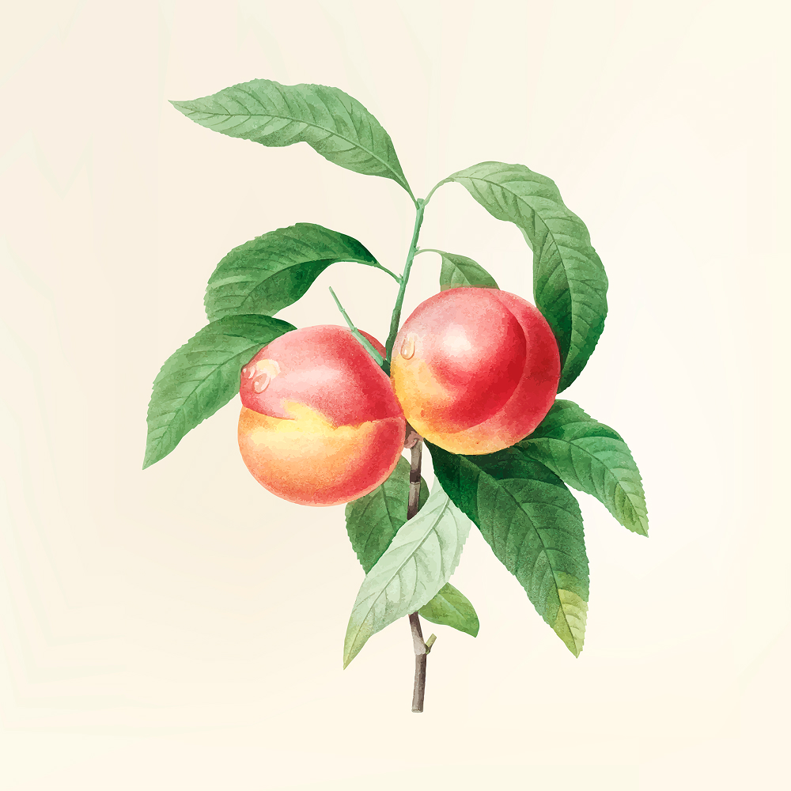
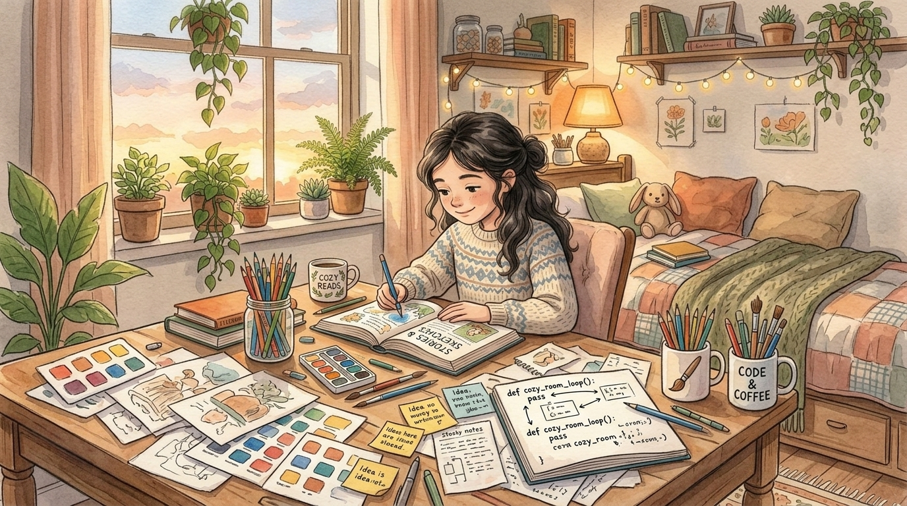

“Yêu thương chân thật không làm bạn mất đi chính mình,
mà giúp bạn đủ an tâm và bao dung để mở rộng lòng đón nhận cả những bất toàn của đối phương.”
Trong câu chuyện ngụ ngôn về "Thùng Đào Mùa Hạ", có một người bán hàng bày ra hai giỏ đào: một giỏ gồm những quả đào trơn bóng, tròn trịa, vỏ hồng đều không một vết xước; và một giỏ là những quả đào sứt sẹo, bị ong châm một chấm nhỏ hoặc vỏ hơi nám vì nắng gió.
Phần lớn khách qua đường đều tranh nhau chọn giỏ đào hoàn hảo. Nhưng người làm vườn già chỉ mỉm cười nói: "Muốn thưởng thức vị ngọt thơm đậm đà nhất, hãy ăn những quả đào sứt sẹo kia. Bởi vì chính ở vết ong châm ấy, dòng mật ngọt tinh hoa của đất trời mới dồn tụ về nhiều nhất".
Nếu bạn đọc mẩu chuyện ấy, hoặc khi đứng trước một người có vẻ ngoài vụng về, có một quá khứ trầy xước, có đôi tay thô ráp hay một nỗi tự ti giấu kín, mà trong lòng bạn không dấy lên sự chê bai hay định kiến — trái lại, bạn thấy dâng lên một niềm thương xót vô ngần — thì điều đó tiết lộ rất nhiều về tầm vóc tâm hồn của bạn.

🍯 Sự chuyển hóa: Từ phán xét của cái tôi đến lòng trắc ẩn
Xã hội hiện đại dạy chúng ta thói quen tôn thờ "sự hoàn mỹ": một bộ hồ sơ đẹp không tì vết, một diện mạo chỉnh chu không một hạt mụn, một mối tình cổ tích không chút tì vết. Cái tôi (Ego) của con người thích phán xét những lỗi lầm và vết xước của người khác để tự tạo cho mình cảm giác an toàn và thượng đẳng.
Nhưng khi bạn đạt đến sự trưởng thành về mặt nhận thức, bạn sẽ nhìn thấu một sự thật giản đơn: Không có ai trên cõi đời này là hoàn hảo cả. Người càng cố tỏ ra cứng cỏi và hoàn mỹ bên ngoài thường lại là người cất giấu nhiều vết rạn nứt đau đớn nhất bên trong.
Khi bạn nhìn thấy một đồng nghiệp lúng túng làm rơi tập tài liệu, nhìn thấy người bạn đời buột miệng nói một câu vụng dại, hay nhìn thấy một người lạ mặt gượng gạo che đi vết sẹo trên tay... Thay vì cười cợt, trong lòng bạn lại nhói lên một sự đồng cảm: "Chắc họ cũng từng vất vả lắm mới đi được đến ngày hôm nay". Đó chính là khoảnh khắc lòng trắc ẩn (Compassion) vượt lên trên mọi sự phán xét hẹp hòi.
🏺 Triết lý Kintsugi: Đỉnh cao của nghệ thuật hàn gắn
Người Nhật có một nghệ thuật truyền thống tuyệt đẹp mang tên Kintsugi — dùng vàng ròng để hàn gắn lại những chiếc bát gốm bị vỡ. Họ không vứt bỏ món đồ sứt mẻ, cũng không cố giấu đi đường nứt. Bằng cách dát vàng lên vết vỡ, chiếc bát trở nên độc bản và có giá trị gấp nhiều lần so với nguyên bản ban đầu.
Tình yêu thương giữa con người với con người cũng như vậy. Yêu thương một ai đó khi họ đang rực rỡ, thành công và xinh đẹp là điều ai cũng làm được. Nhưng ở lại bên cạnh, dang rộng vòng tay ôm lấy những góc khuất tăm tối, những vết thương chưa lành và sự bất toàn của đối phương — đó mới là thứ tình cảm làm nên sự thiêng liêng của đời người.

🌿 Lời nhắn nhủ từ Tiệm: Dịu dàng với người, bao dung với mình
Học cách thương vết sứt của người khác cũng chính là chìa khóa diệu kỳ giúp bạn chữa lành cho chính bản thân mình.
Bởi vì khi bạn chấp nhận được rằng người khác có quyền vụng về, có quyền bất toàn, thì bạn cũng sẽ thôi dằn vặt bản thân vì những lần thi trượt, những mối tình tan vỡ hay những quyết định sai lầm trong quá khứ. Bạn sẽ hiểu rằng: Những vết sứt sẹo ấy không làm giảm đi giá trị của bạn, chúng chỉ chứng minh rằng bạn đã dũng cảm sống và vượt qua giông bão.
Hãy tiếp tục giữ lấy tấm lòng bao dung ấy nhé. Giữa một thế giới đôi khi quá đỗi khắt khe và vội vã, ánh mắt biết thương của bạn chính là một dòng suối mát lành sưởi ấm những ai đang may mắn được bước chân vào cuộc đời bạn.